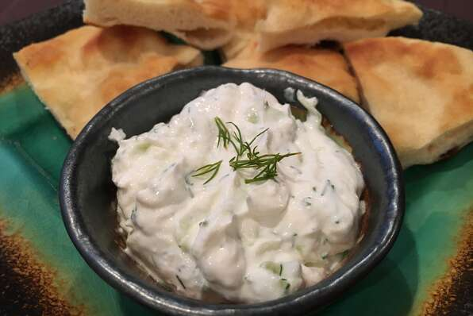

Tzatziki

Description
Greek tzatziki. A perfect sauce to accompany your meat
Ingredients
- 1 large English cucumber, peeled and grated
- 2 cups Greek yogurt
- 4 cloves garlic, minced
- ½ teaspoon salt
- 2 tablespoons chopped fresh dill
- 3 tablespoons olive oil
- vinegar
Steps
- Sprinkle grated cucumber with 1/2 teaspoon salt in a bowl and let stand 10 to 15 minutes to draw out juice.
- Dump cucumber and its juice onto a sturdy, dry paper or cloth towel and squeeze as much moisture as possible from the cucumber.
- Place yogurt into a separate bowl. Mix cucumber into yogurt. Add garlic, cayenne pepper, and lemon juice; mix thoroughly.
- Stir dill into yogurt-cucumber mixture; season with salt and black pepper. Adjust all seasonings to taste.